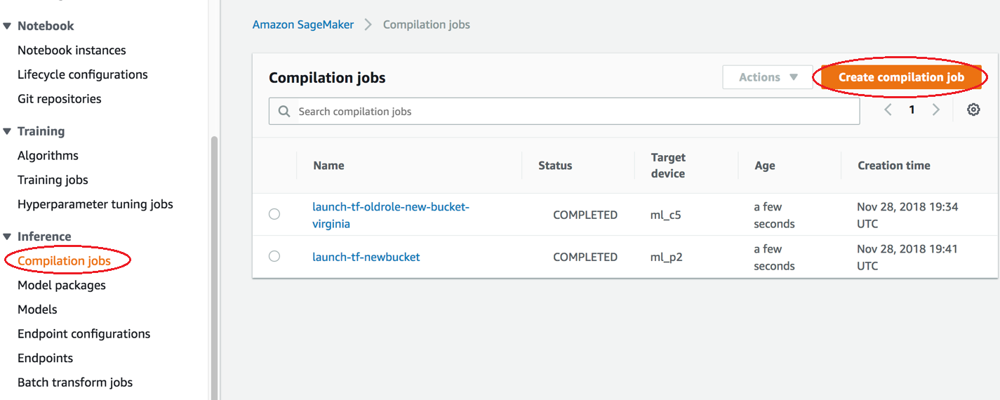
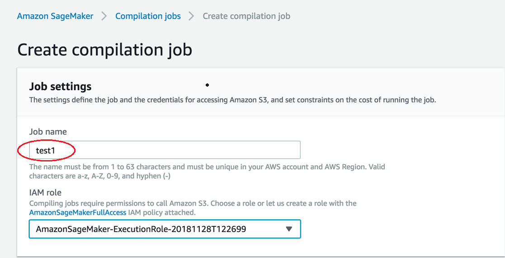
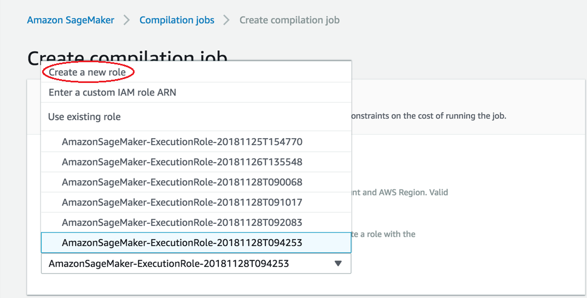
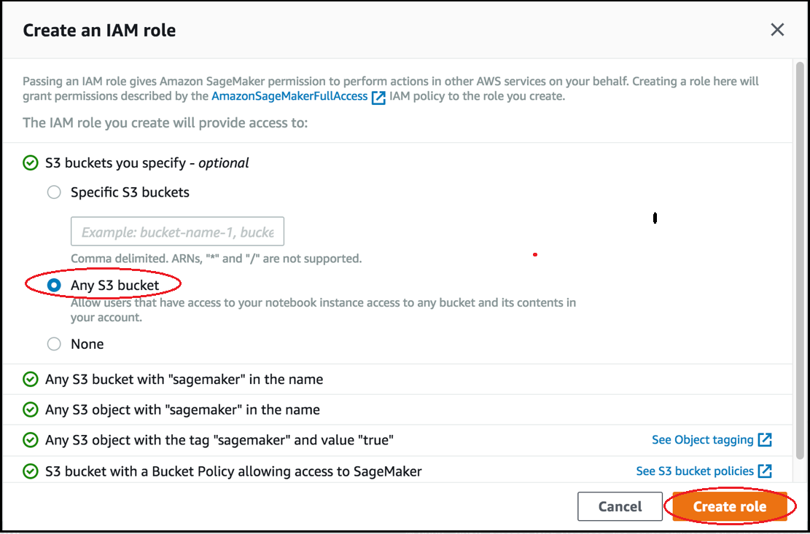
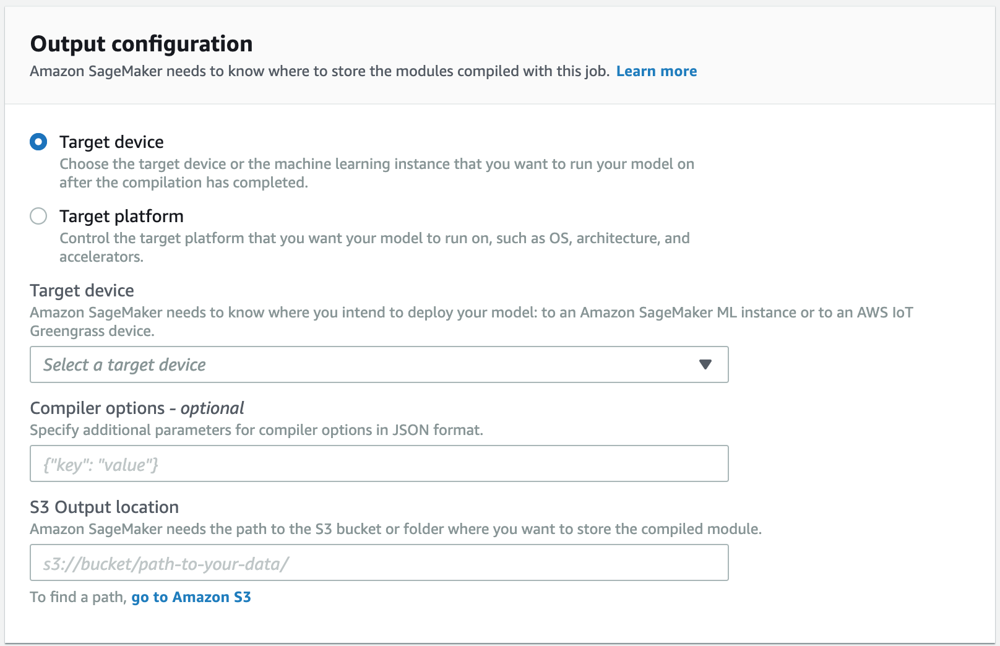
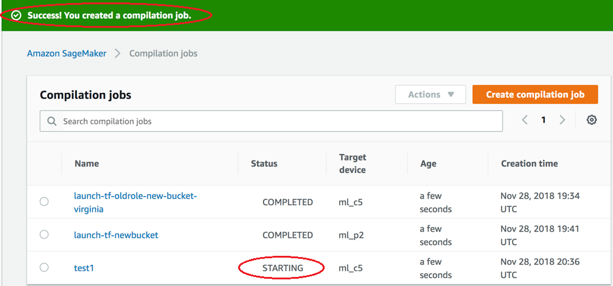
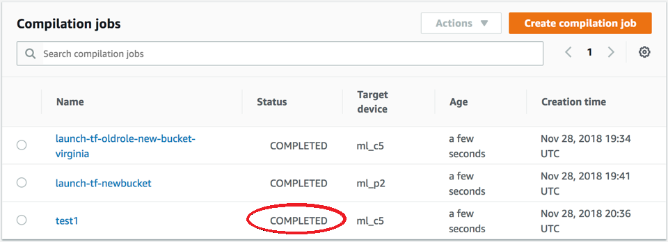

Compile a Model (Amazon SageMaker Console)
You can create an Amazon SageMaker Neo compilation job in the Amazon SageMaker console.
In the Amazon SageMaker console, choose Compilation jobs, and then choose Create compilation job.
On the Create compilation job page, under Job name, enter a name. Then select an IAM role.
If you don’t have an IAM role, choose Create a new role.
On the Create an IAM role page, choose Any S3 bucket, and choose Create role.
-
-
Go to the Output configuration section. Choose where you want to deploy your model. You can deploy your model to a Target device or a Target platform. Target devices include cloud and edge devices. Target platforms refer to specific OS, architecture, and accelerators you want your model to run on.
For S3 Output location, enter the path to the S3 bucket where you want to store the model. You can optionally add compiler options in JSON format under the Compiler options section.
 Check the status of the compilation job when started. This status of the job can be found at the top of the Compilation Job page, as shown in the following screenshot. You can also check the status of it in the Status column.
Check the status of the compilation job when completed. You can check the status in the Status column as shown in the following screenshot.
